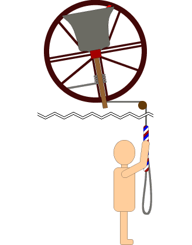

Before a ringer can ring rounds they need to confident in handling a bell.
When ringing the bell is always facing up to start with. With each pull the bell swings one way then the other. These two pulls, referred to as strokes have names - handstroke when the sally is pulled and the rope goes up; and backstroke when the rope is pulled and the sally comes down. At the end of each rotation, the bell will strike once.
The smallest bell in a tower is referred to as the
treble and is bell 1. The largest is called the
tenor. In a tower with 6 bells, bell 6 will be
the tenor. In a tower with 10 bells, bell 10 will be the
tenor. It is common to 6 or 8 bells.
Larger churches
can have 10 or even 12 bells.
When ringing rounds the person on the treble bell
calls everyone to attention by saying "Look to!".
When everyone is ready the persons says "Treble's
going" and starts to pull down on the rope.
As
the bell starts to move the call is "Treble's gone.".
This is the signal for everyone else to pull in turn.
Rounds mean ringing all the bells in order from the lightest to the heaviest and then repeating the pattern.
https://commons.wikimedia.org/w/index.php?curid=75913607
There are many videos on social media. You can watch a set of rounds being run on 6 bells on the youtube video below.